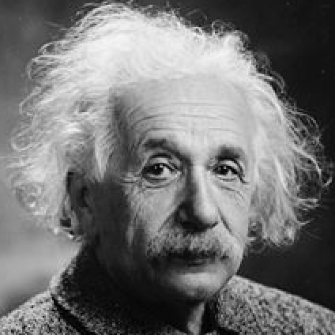

Assignment 1: Image Convolution
Deadline 1: January 26, 2022 at 5pm
Read carefully: Academic integrity must be stricly followed. Copying-and-pasting from other's
code or froms any sources is not allowed. Software will be used
to detect any form of source code plagiarism. You must write
your code in ipython notebook (or jupiter notebook), and indicate
the number of the questions/instructions clearly.
-
Write a program in Python for image 2D convolution using
BOTH OpenCV's function (cv2.filter2D) and your own
image convolution function. Apply those convolution
functions to this image below according the following instructions:

Note: Reference for using OpenCV's convolution/filtering
function can be found here.
- Use the Sobel kernel
[info], and show the result.
- Use a Gaussian kernel
[info],
and show the results for sigma = 1.0, 5.0, and 10.0.
- Compute the image gradient in x and y directions, and
show the results.
- Downscale the image into 24x24 pixels, and use the three types ofthe Haar-like masks, where the sizes of the
masks are 5 times of the default sizes. Enlarge the results
to 250x250 pixels, and show them.
Submission:
Submit your jupyter notebook via CANVAS by the deadline. Late
submission will be deducted 2 points (out of 10) for every 24 hours.